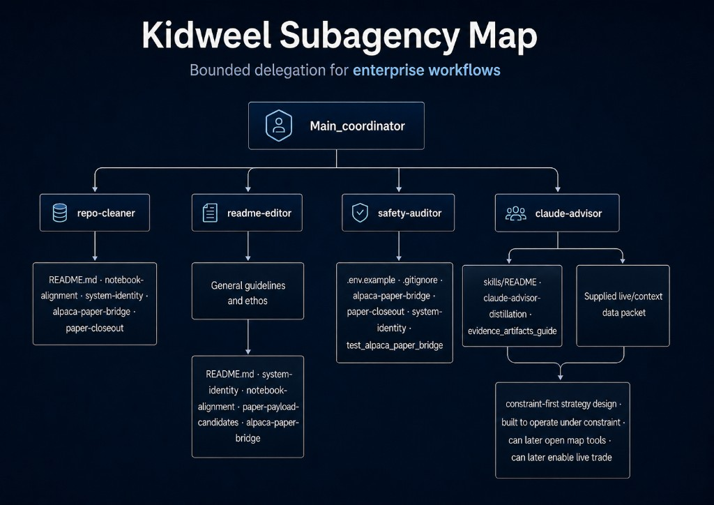

Kidweel
Human decision-making inside bounded delegation.
Agents assist. Humans decide. The process records why.
A live paper-trading automation capstone translated into a portable control pattern for enterprise workflows.

Subagency Proof
Kidweel demonstrates bounded delegation for enterprise workflows.
Agents inspect, classify, summarize, and propose. They do not inherit authority to approve, route, submit, or escalate.
Human review stays in the decision path. The audit trail records the handoff.